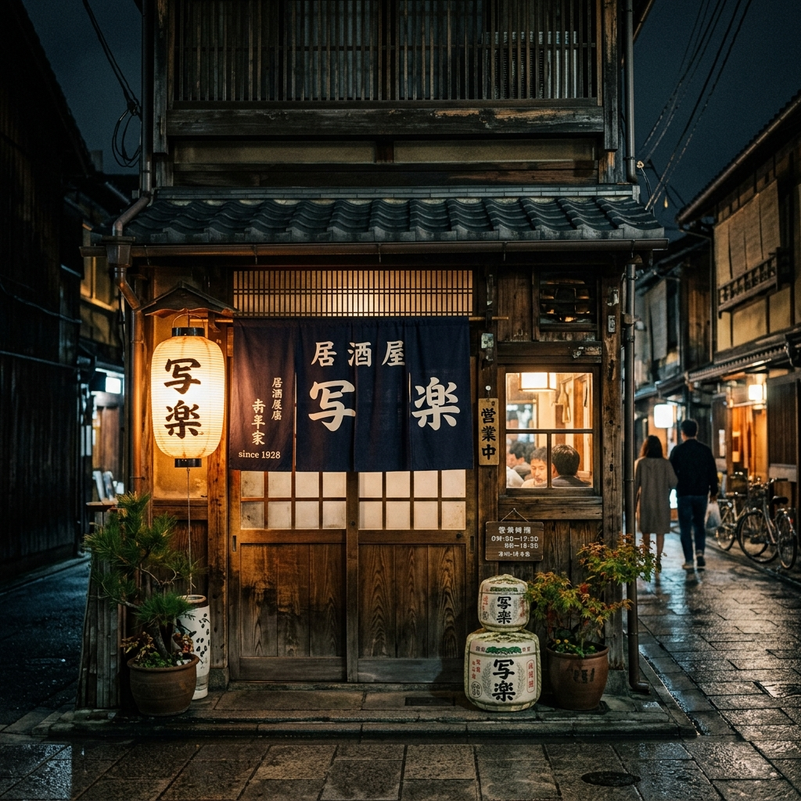
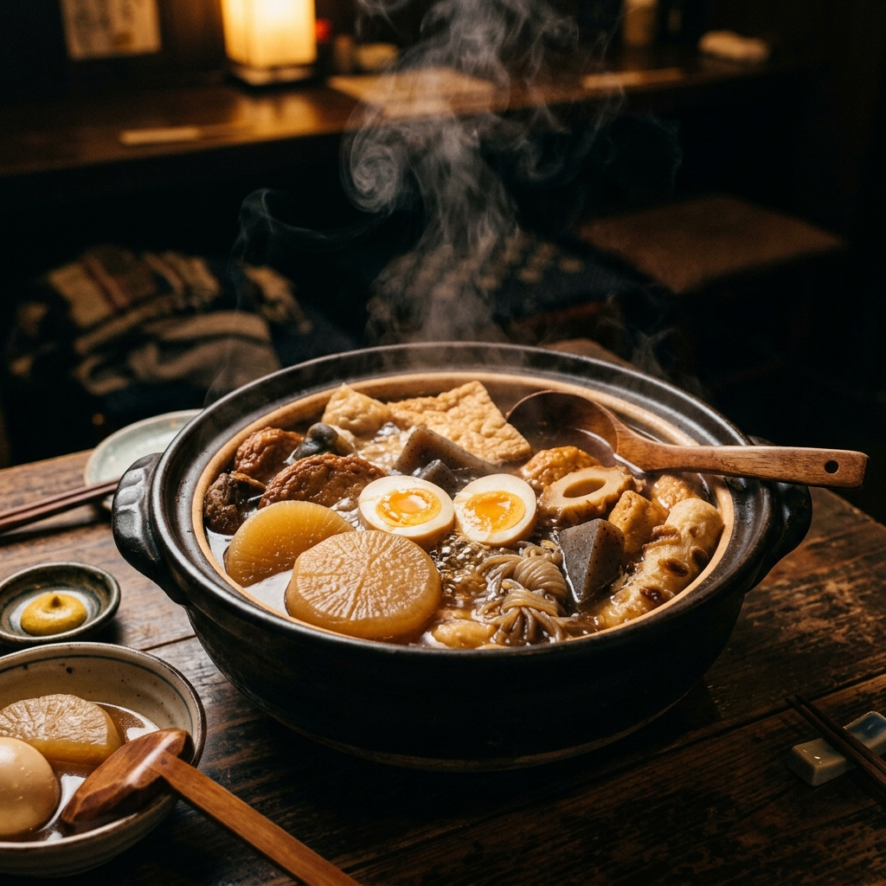
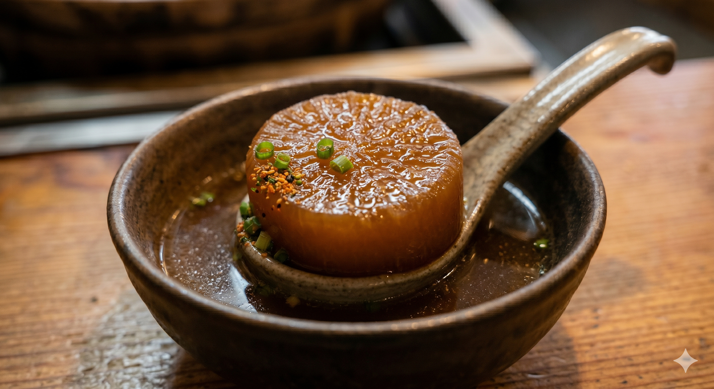

History
のれんを守りて、六十余年
昭和三十七年、先代がこの路地に小さな屋台を構えたのが始まりでございます。やがて店を構え、二代にわたってのれんを守ってまいりました。
うつろう時代のなかでも、「お客様をあたたかくお迎えする」という心だけは、創業の日より一度も変えておりません。今宵もまた、湯気の向こうで皆さまをお待ちしております。

Soup Stock
毎朝引く、黄金の出汁
利尻昆布を一晩かけて水出しし、本枯れ節を惜しみなく使って引く一番出汁。澄み切った琥珀色の出汁は、ゑびすの命でございます。
継ぎ足しではなく、毎朝新たに引く。手間を惜しまぬことが、いつもの一杯の深みを生みます。

Preparation
種ごとに、ていねいな仕込み
大根は面取りと下茹でを重ね、二日かけて出汁を含ませます。すじは丹念に下処理し、がんもは自家製で。一つひとつの種に、それぞれの手間をかけております。
派手さはなくとも、口に運んだときにふっとほどける——そんな滋味を大切にしております。
A Word from the Master
「うまいものを、気どらずに。
寒い夜も、嬉しい日も、
ふらりと立ち寄れる一軒でありたい。
それが、ゑびすの願いでございます。」
二代目主人 恵比寿 太一